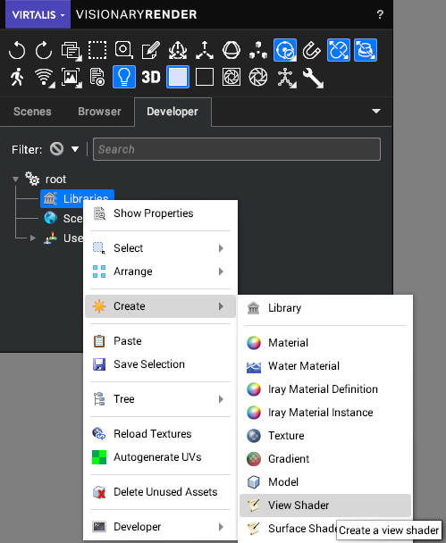

Writing View Shaders
A guide to writing filters that can be applied to the screen to perform specific rendering effects.
A View Filter can perform custom rendering effects on the final rendered image, using a View Shader to accomplish this.
View Filter
These are filters which can be added to the scene to perform specific rendering effects to the final rendered image. There are a number of pre-configured filters built into Visionary Render.
A View Filter is a node that can be created and placed anywhere in the scene tree that, if enabled, will perform some kind of post-processing on the final image drawn into the viewport. In order to do this, it uses a View Shader. A newly created View Filter uses the default View Shader, which is a somple edge-detect algorithm which highlights edges. There are a number of pre-configured View Shaders built into Visionary Render.
This edge-detect shader is also used to indicate an error in your View Shader source code.
View Shader
A View Shader is an assembly that can be created and placed only under a Library assembly, in the Developer tree. When referenced by a View Filter it executes its shader source code on every pixel in the final image drawn in the viewport. You can view and edit this shader source code by double-clicking on the View Shader in the tree.

The View Shaders are written in OpenGL Shading Language (GLSL). It should take the following basic form:
void mainImage(out vec4 fragColor, in vec2 fragCoord)
{
fragColor = getColour();
}
That shader would pass the current colour through unchanged. The main function must always be called 'mainImage' and it should always have those two parameters 'fragColor' and 'fragCoord'. The job of this function is to provide a colour (fragColor) at the specified pixel position (fragCoord). When the renderer automatically calls this function the 'fragCoord' parameter will contain the position of the pixel in viewport coordinates which has its origin at the lower-left (so 0,0 will be the lower-left of the viewport, while 1920,1080 would be the upper-right of the viewport if the viewports resolution was 1920x1080).
You could perform any kind of mathematics using only the pixel position to generate a colour, but its real use is if you know what the current colour of the pixel is. In order to find out what the current colour of the pixel is you need to call the 'getColour()' function, which returns a value of type 'vec4'. So, for example, to double the brightness of every pixel you could do the following:
void mainImage(out vec4 fragColor, in vec2 fragCoord)
{
fragColor = getColour();
fragColor += getColour(fragcoord.x+1.0, fragCoord.y);
fragColor += getColour(fragcoord.x+1.0, fragCoord.y+1.0);
fragColor += getColour(fragcoord.x, fragCoord.y+1.0);
fragColor /= 4.0;
}
At some point when writing these shaders you may think it would be useful to have a value that's tweakable in the user interface. Say in our brightness example we would like to allow the brightness factor to be controllable from within Visionary Render itself, whether through the user interface or via LUA script. We could do the following to allow this:
<params>
<MyTweakableBrightness type="float" default="1.0" />
</params>
uniform float MyTweakableBrightness;
void mainImage(out vec4 fragColor, in vec2 fragCoord)
{
fragColor = getColour() * MyTweakableBrightness;
}
Now when we use this shader in a View Filter the parameter 'MyTweakableBrightness' will be shown in that View Filters properties with the default value of 1.0 and can be changed.
NOTE: it will also be shown under the View Shader's properties, but the value under the View Filter will by default override that value, unless you uncheck the "Override" checkbox in the View Filter copy, or check the "Locked" checkbox in the View Shader's copy.
As you can see there's two parts to declaring one of these parameters in the shader source code - firstly we declare it as a GLSL uniform in the standard way (uniform just means a value that is set externally from somewhere else), then we use the block to indicate to Visionary Render that it should expose this uniform in the tree for editing.
Built-in Variables and Functions
While writing view shaders you can use a number of built-in variables and functions that are automatically managed for you by the renderer. See some of the example shaders for how to use them.
Variables
Variable | Description |
|---|
vec3 iResolution | The viewport resolution (z is pixel aspect ratio, usually 1.0). |
float iGlobalTime | Time since application started in seconds. |
vec2 iMouse | Current pixel coordinates of the mouse cursor. |
Functions
Function | Description |
|---|
vec4 getColour() | Returns the RGBA colour at the current pixel position. |
vec4 getColour(float x, float y) | Returns the RGBA colour at a specific pixel position. |
vec3 getEyePos() | Returns the eye-space position at the current pixel position. |
vec3 getEyePos(float x, float y) | Returns the eye-space position at a specific pixel position. |
vec3 getNormal() | Returns the eye-space normal at the current pixel position. |
vec3 getNormal(float x, float y) | Returns the eye-space normal at a specific pixel position. |
vec3 getWorldNormal() | Returns the world-space normal at the current pixel position. |
vec3 getWorldNormal(float x, float y) | Returns the world-space normal at a specific pixel position. |
float getDistance() | Returns the distance in metres from the camera at the current pixel position. |
float getDistance(float x, float y) | Returns the distance in metres from the camera at a specific pixel position. |
vec4 convolve3x3(vec2 fragCoord, float kernel[9]) | Returns the RGBA result of a 3x3 convolution filter passed in the 'kernel' parameter, around the coordinate 'fragCoord'. |
Built-in View Shaders
There are a number of View Shaders built in to the Visionary Render installation. There now follows a brief description of each of them.
Name | Description |
|---|
Default | This is the default filter setting, wobbles the image. |
Posterize | Quantizes the red, green and blue components of the colour so they can be one of only 8 values, as opposed to being one of 256 values usually. This has the effect of looking like a poster printed using a very limited palette of ink. |
Depth of Field | This adaptively blurs pixels depending on their distance from a focal plane. This distance is automatically set to be the distance of the pixel in the centre of the viewport, so anything drawn in the centre of the viewport will be sharp whereas everything else will be blurrier depending on how much closer or further away they are from this distance. This shader has a single tweakable parameter called 'maxblur', which dictates how large the blur kernel will be. |
Camera Motion Blur | Adds motion blur to camera movement. Allows you to set the motion trail length, default is 2.0. |
FXAA | Applies a fast, approximate anti-aliasing technique to reduce jagged edges |
Wobbly | Offsets the pixels horizontally in a wave pattern |
Show Normals | Shows the world-space normal vectors as colours around the mouse position. Allows you to set the radius from the cursor in pixels. |
Torch | Places a point light 1cm above the surface under the mouse. The Distance and luminance can be set using the height and luminance metadata values. |
Edge Detect | Simple Laplacian edge detect convolution. |
White Edge | Laplacian edges detected and drawn in white. |
Red Edge Overlay | Laplacian edges detected and drawn in red. |
Sobel | Sobel operator. |
Silhouette | Draws a white silhouette around everything drawn against the clear background. |
Multiple filters can be combined together to form different effects.